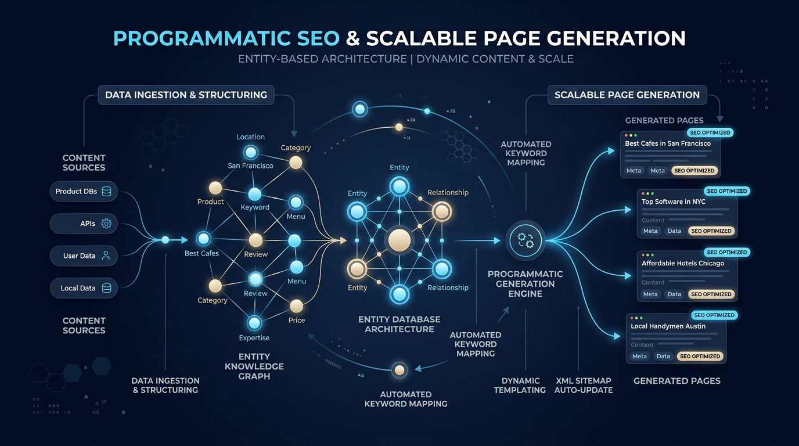
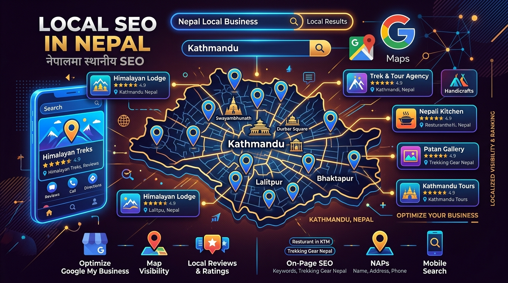
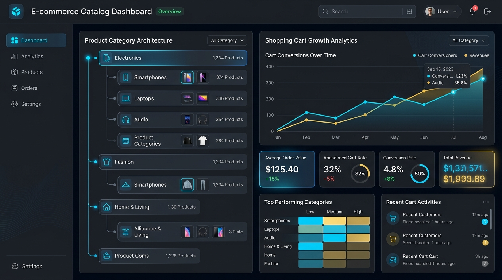
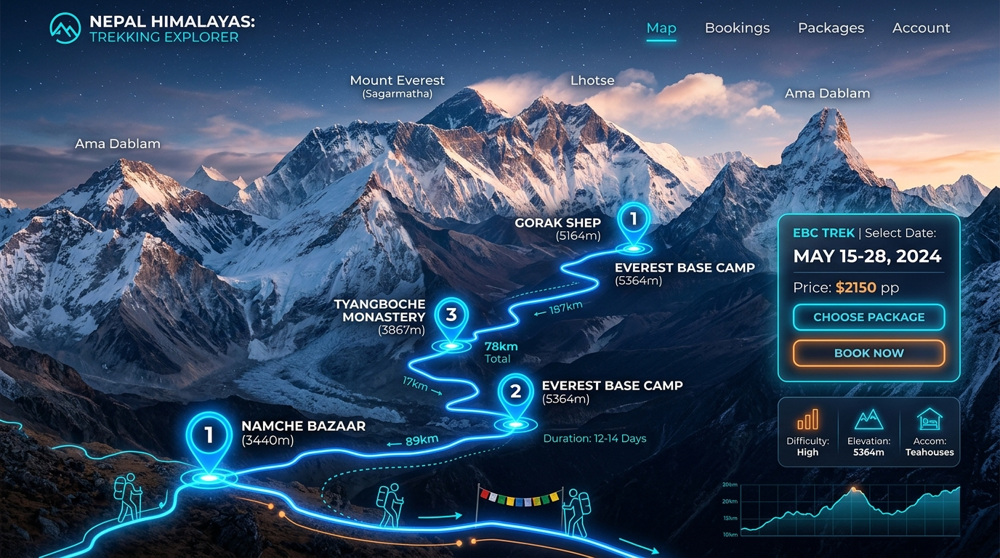
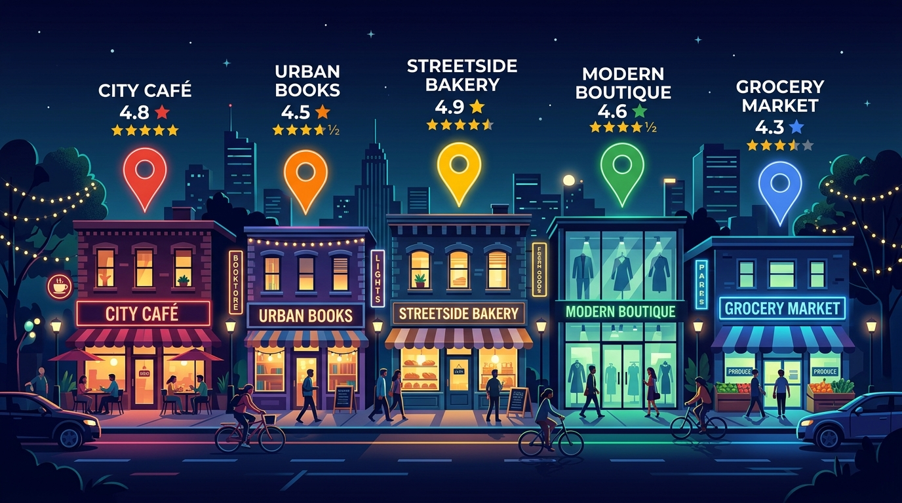
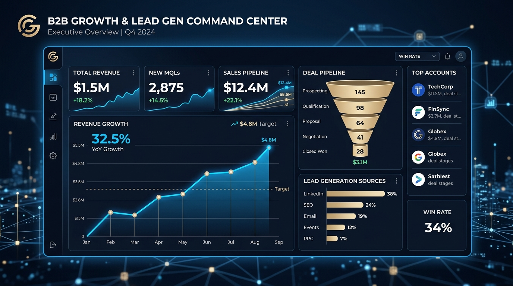

SEO Expert in Nepal to Grow Your Business
As an experienced SEO Expert in Nepal, I help growth-focused companies build sustainable organic search visibility through Semantic SEO, topical authority maps, entity optimization, and technical search engineering.
SEO expert in Nepal to rank your website higher
A skilled SEO professional optimizes websites for search engines, implements data-driven strategies, and helps businesses rank higher in Google searches. Whether you need local, national, or international SEO services, the right expert analyzes search trends, manages on-page and off-page SEO, and develops customized strategies for businesses in Nepal.
If you're looking to hire an experienced SEO consultant to enhance your online visibility and boost your online sales, choosing the right professional for your needs ensures long-term success.
What an SEO Expert in Nepal Actually Does
Hiring an SEO Expert in Nepal should mean getting a strategic search consultant, not a low-quality link spammer. Here is the exact 5-step engineering framework I follow to deliver high-intent search revenue:
Diagnosis & Entity Audit
Audit Search Console logs, crawl bottlenecks, entity gaps, indexation issues, and competitor topical maps.
Topical Architecture Design
Map your industry's knowledge graph into hub-and-spoke content nodes, internal links, and semantic attributes.
Technical & Schema Foundation
Engineer JSON-LD structured data graphs, fix crawl budgets, optimize Core Web Vitals, and refine site speed.
Semantic Execution
Create high-information-gain content briefs, optimize intent vectors, and build citation-ready fact density.
AI Search & Conversion Iteration
Measure AI Overviews, Perplexity & ChatGPT citations alongside qualified lead volume and Search Console impressions.
- Custom Semantic SEO & Topical Map Architecture blueprint.
- Deep technical SEO site audit, log file analysis & JSON-LD schema.
- AI Search (GEO) visibility testing for ChatGPT, Gemini & Perplexity.
- Monthly Search Console trends & qualified lead acquisition logs.
- Mass automated PBN backlink spamming or low-quality link building.
- Guaranteed #1 rankings claims (violates search engine guidelines).
- Low-effort AI article spinning without information gain.
- Vanity-metric reporting focused only on non-converting keywords.
What can I bring to your project?
Increase in indexed keywords and impression
By optimizing your content and aligning it with search intent, I can significantly expand the number of indexed keywords and impressions for your site. This leads to greater visibility across search engines and attracts more organic traffic.
Increase in ranking and traffic
I'll implement proven SEO strategies to improve your site's rankings for high-value keywords. As your site climbs in search engine results, you'll experience a steady increase in targeted traffic, driving more potential customers to your content.
Increase in conversion (month over month)
Through a combination of on-page optimization, enhanced user experience, and conversion-focused strategies, I'll work to boost your conversion rate month over month, ensuring that more visitors take the desired actions on your site.
Get yourself featured in AI overviews
With the increasing relevance of AI-driven tools and insights, I'll ensure your content gets featured in AI overviews, positioning your brand as an authoritative source and increasing your exposure on platforms like Google AI.
Ensure your site has 100% health score
I'll conduct a thorough audit of your site, identifying and resolving technical issues, improving page speed, fixing broken links, and optimizing user experience to ensure your site consistently achieves a 100% health score.
Rank in LLMs (ChatGPT, Gemini and Perplexity)
By optimizing your content for AI models like ChatGPT, Gemini, and Perplexity, I'll help your website gain prominence in these platforms' knowledge bases, ensuring your content ranks high when AI-driven tools generate recommendations.
Why Hire Bishal Oli as Your SEO Consultant in Nepal?
1. First-Hand Experimentation
Built on first-hand SEO testing and live Search Console data rather than theory-only recommendations.
2. Semantic & Entity Thinking
Focusing on entity knowledge graphs, topical context, and meaning rather than keyword lists alone.
3. Technical Integration
Connecting site architecture, crawlability, indexation, and schema directly with content strategy.
4. AI Search Awareness
Grounded in real LLM answer testing, without making false guaranteed-citation claims.
5. Commercial Revenue Focus
Every campaign is evaluated on qualified demand, conversion leads, and business growth.
6. Global Reach from Nepal
Deep Nepal market expertise paired with international delivery capabilities for global clients.
Specific Search Bottlenecks I Help You Fix
Rankings Drop & Core Updates
Recover lost impressions by restructuring thin pages into structured, entity-backed topical nodes.
High Traffic But Zero Leads
Shift focus from informational vanity keywords to high-intent commercial search vectors that drive inquiries.
Indexation & Crawl Bottlenecks
Eliminate faceted navigation duplication, crawl waste, slow response times, and broken schema graphs.
Invisible in AI Answer Engines
Optimize brand entity fact density to ensure citations in Google AI Overviews, Perplexity, and ChatGPT.
Weak Industry Authority
Construct complete hub-and-spoke sitemaps to establish dominance over competitor topic networks.
Google Maps & Local Search Gaps
Dominate local business searches across Kathmandu and Nepal with verified Google Business Profile signals.
From Search Understanding to Sustainable Organic Growth
Commercial Goal Discovery
Understand the business model, target market, buyer journey, and revenue objectives.
Entity & Topic Modeling
Model entities, topics, attributes, relationships, and underlying search intent.
Topical Map Architecture
Build the master sitemap, hub-and-spoke relationships, and internal link graph.
Technical & Schema Engineering
Strengthen crawlability, indexation, PageRank distribution, and structured JSON-LD data.
Semantic Content Execution
Create or optimize content for depth, semantic relevance, and unique information gain.
AI Search & Citation Optimization
Optimize for AI Overviews, Perplexity, and Gemini citations using clear fact density.
Measurement & Verification
Track organic impressions, qualified leads, Search Console trends, and live tests.
System Refinement
Continuously refine the search graph based on empirical search behavior and evidence.
Semantic SEO & Knowledge Graph Architecture
Modern search engines no longer index keywords in isolation—they construct entity knowledge graphs connecting entities, context, attributes, and user intent. As a specialized Semantic SEO Expert in Nepal, I structure your domain so search systems recognize your brand as the canonical authority in your niche.
AI Search Optimization (GEO & LLM Citations)
Generative AI search engines like Google AI Overviews, Perplexity, and ChatGPT evaluate websites based on fact density, entity consistency, and citation credibility. I optimize your content structure so your brand gets recommended in generative answer engines.
SEO Services in Nepal — Six Pillars of Optimization
Semantic SEO
Build content and site architecture around entities, context, meaning and search intent.
Learn Semantic SEO →Topical Authority
Build comprehensive topic coverage, topical depth and interconnected content systems.
Explore Topical Authority →AI Search Optimization
Improve visibility across AI-driven search experiences through entities, content quality, and citations.
Explore AI Search (GEO) →Technical SEO
Strengthen crawlability, indexation, site architecture, structured data and performance.
View Technical Standards →
Programmatic SEO
Scale useful, data-driven search pages with controlled templates and quality safeguards.
Explore Scalable SEO →
Local SEO Nepal
Help Nepal-based businesses improve local visibility across Google Search, Maps and business discovery.
Explore Nepal Local SEO →SEO Strategy tailored to your Business Model
SaaS & Software
Content-led acquisition, topical authority maps, programmatic search pages, and technical SEO.

E-Commerce Brands
Category & product hierarchy, internal link distribution, faceted navigation cleanup, and scalable SEO.

Travel & Trekking
Destination entities, topical coverage, commercial travel intent, and international lead generation.

Local Businesses
Google Maps prominence, business discovery, customer reviews, and high-converting local landing pages.

B2B Companies
Long-cycle search buyer journeys, thought-leadership authority, and high-value lead acquisition.
Deep Understanding of the Nepal Search Market
Businesses in Nepal face distinct search dynamics—ranging from localized Kathmandu Valley query behaviors to international tourism acquisition for trekking and hospitality brands. As an SEO Expert in Nepal, I build search strategies tailored specifically to Nepal's commercial landscape.
Real SEO Projects. Measurable Search Growth.
Semantic SEO Restructure
Restructured domain sitemap into entity-mapped clusters, resulting in +280% organic impression growth in 90 days.
Google AI Mode Experiment
Tested structured JSON-LD fact statements against plain text to achieve consistent citation in AI Overviews.
Nepal Travel Intent Expansion
Built a destination entity map for high-intent trekking queries, capturing international travelers.
Category Architecture Scale
Eliminated faceted navigation indexation bloat, accelerating category search visibility.
B2B Lead Acquisition SEO
Targeted commercial intent search nodes to build a steady pipeline of consultation requests.
First-Hand SEO & AI Search Experiments
Google AI Overviews Fact Density
Tested structured entity definitions vs conversational copy to verify AI answer engine citation triggers.
Topical Sitemaps vs Page Count
Proved that 15 tightly mapped semantic pages beat 100 isolated thin blogs in topical authority scoring.
JSON-LD Knowledge Graph Links
Evaluated exact `sameAs` entity declarations for disambiguating brand entities in Google's Knowledge Vault.
Real Clients. Real Video Reviews. Measurable Impact.
Click on any video card below to watch real client video testimonials and see how Semantic SEO, topical authority architecture, and technical optimization transformed their search growth.
What Clients Say
Bishal Oli, SEO Expert in Nepal has been incredible. His ROI oriented SEO Services is what I exactly needed for my business growth. He analyzed our topical authority gaps, restructured our category hierarchy, and delivered a 3x increase in qualified leads within 5 months. Highly recommended for any business looking for data-driven organic growth!
Hands down, the best SEO Expert in Nepal. Bishal Oli has been incredible. His SEO Services has been affordable, transparent, and results driven. He doesn't just sell promises; he provides clear Search Console data and structured semantic frameworks that actually drive revenue.
The Best SEO Expert in Nepal, I have worked with. Bishal Oli is everything you want in an SEO Expert for your business growth. His technical SEO audit and entity modeling resolved indexing bottlenecks we fought for years.
Bishal Oli is an exceptional Semantic SEO Expert in Nepal. He built a complete topical map for our domain that completely transformed our organic visibility across competitive search intents. The structured node architecture was a game changer for us!
Hands down the premier AI Search Optimization Expert in Nepal. Bishal prepared our brand for Google AI Overviews and ChatGPT citations effortlessly. His GEO strategy ensured our entity is recognized across all major search AI models.
Working with Bishal Oli on Semantic SEO and AI Search Optimization was the best decision for our company. Highly knowledgeable, data-backed, and transparent throughout the entire consulting engagement.
How Hiring Me as Your SEO Consultant in Nepal Works
Discovery & Fit Analysis
We evaluate your current organic presence, business goals, and confirm mutual project fit.
Entity & Technical Audit
Deep diagnosis of indexability, schema graphs, crawl bottlenecks, and topical authority gaps.
Topical Sitemap Roadmap
Blueprint mapping out every hub-and-spoke page, internal link graph, and content priority queue.
Execution & Consulting
Deploy technical fixes, publish semantic content briefs, and guide your in-house engineering team.
Measurement & Refinement
Track organic leads, Search Console trends, and AI Search citations with monthly executive reviews.
What You Receive in Every SEO Consulting Engagement
Full Technical Audit Diagnosis
Line-by-line breakdown of indexability bottlenecks, log files, and Core Web Vitals fixes.
Topical Authority Sitemap Map
Complete visual blueprint of hub pages, spoke nodes, and internal PageRank flow.
Semantic Content Briefs
Detailed content guidelines specifying intent vectors, entity attributes, and fact density.
JSON-LD Knowledge Graph Code
Custom validated structured data code for Person, Organization, and Service schemas.
AI Search Visibility Tracking Log
Monthly audit log checking citations across Google AI Overviews, Perplexity & ChatGPT.
Executive Consultation Cadence
Direct 1-on-1 strategy sessions, decision logs, and priority roadmap updates.
How to Choose an SEO Expert in Nepal
Evaluating an SEO consultant can be difficult. Use this practical evaluation checklist to verify competence, transparency, and ethical standards before signing an agreement.
1. Demand Full Account Ownership
Ensure you retain direct owner access to Google Search Console, Google Analytics (GA4), Google Business Profile, and your CMS at all times.
2. Look for First-Hand Proof
Ask for verified case studies, empirical experiments, and live Search Console data rather than generic claims or screenshot snippets.
3. Verify Semantic & AI Understanding
Check if the provider understands entities, topical sitemaps, JSON-LD schema, and AI Search Optimization (GEO) beyond keyword lists.
4. Avoid Guaranteed Rankings Claims
Google's guidelines explicitly warn against SEO providers promising "guaranteed #1 spots". Legitimate experts promise rigorous methodology.
Red Flags & What I Do NOT Do
Building long-term topical authority requires absolute transparency. Here are the unethical anti-patterns I strictly reject:
No Guaranteed #1 Rankings
Search algorithms are dynamic. I promise rigorous engineering and evidence-backed systems, never fake guarantees.
No Automated PBN Backlink Spam
I do not buy toxic private blog network links that trigger algorithmic manual action penalties.
No Fake Local Addresses or Reviews
I strictly follow Google Business Profile guidelines. No fake locations or manufactured reviews.
No Opaque Proprietary Lock-In
All sitemaps, content briefs, technical code, and Search Console access remain 100% your property.
Why You Need to Choose Bishal Oli as Your SEO Expert?
Here's how I deliver more value, clarity, and results compared to typical service providers. See why choosing my approach makes the difference.
- Rely on outdated, keyword-stuffed content tactics
- Chase vanity metrics without focusing on revenue
- Ignore semantic search and AI optimization (AIO)
- Provide vague reporting with zero strategic clarity
- Treat SEO as a one-time checklist, not a growing ecosystem
- Build comprehensive Topical Authority for lasting rankings
- Optimize for modern LLMs and AI Search (ChatGPT, Perplexity)
- Focus strictly on ROI, conversions, and qualified lead flow
- Provide transparent, data-backed strategic reporting
- Implement scalable, long-term semantic content architectures
Nepal SEO & Search Optimization FAQs
I help businesses understand search opportunities, build an SEO strategy, improve site architecture and content, strengthen technical foundations, and measure the impact on visibility, traffic and leads.
My specialization is Semantic SEO and AI Search Optimization, supported by topical authority, entity SEO, technical SEO and scalable SEO systems.
Yes. Nepal is my primary commercial market, and I also work with international businesses where the project fit is appropriate.
Yes. I provide advanced SEO training focused on Semantic SEO, Topical Authority, AI Search and practical implementation.
Yes. Local SEO is a core service area for Nepal-based businesses, including local search strategy, Google Business Profile, Maps visibility, reviews, local landing pages and local authority.
I focus on entity understanding, useful information, strong source quality, semantic relevance and measured experiments across AI-driven search experiences. I do not promise guaranteed AI citations or rankings.
Let’s Build SEO That Makes Sense — and Gets Found.
Whether you need a stronger SEO strategy, Semantic SEO architecture, AI Search optimization, technical SEO or a clear path to qualified organic leads, the first step is understanding your current search system and the opportunities inside it.